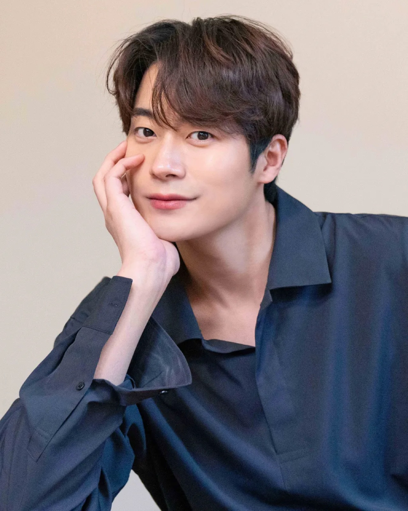

Directing
연출 · 각본Film — 영화 연출


Commercial — 광고 · 브랜디드 연출


Sketch — 행사 스케치


Stage — 뮤지컬 각본
배우의 몸과 감독의 눈, 두 자리에서 이야기를 만듭니다.
2013년 SBS 〈상속자들〉로 데뷔해 〈왜그래 풍상씨〉 이외상 역으로 얼굴을 알렸고, 2021년 MBC 〈두 번째 남편〉으로 MBC 연기대상 일일연속극 부문 남자 최우수 연기상을 받았습니다. 드라마와 영화, 연극 무대를 오가며 연기하고 있습니다.
한국예술종합학교 연극원에서 연기를, 영상원 영화과에서 연출을 공부했습니다. 2018년 단편영화 〈MERRY〉로 감독 데뷔해 제15회 서울영등포국제영화제에서 상영되었고, 2025년에는 홍콩관광진흥청과 르무통의 제작지원을 받은 숏폼 드라마 〈타생지연〉의 기획·연출·제작을 총괄했습니다. 영상 제작 스튜디오 오오엠엠(00MM FILM)을 운영합니다.
50회가 넘는 헌혈로 대한적십자사 헌혈유공장 금장을 받았고 헌혈 홍보대사로 활동했습니다. 청소년에게 필름카메라로 세상을 담는 법을 알려주는 교육 봉사 '프레임 프로젝트'를 이어가고 있습니다.

Drama
Film
Stage
Film — 영화 연출
Commercial — 광고 · 브랜디드 연출
Sketch — 행사 스케치
Stage — 뮤지컬 각본